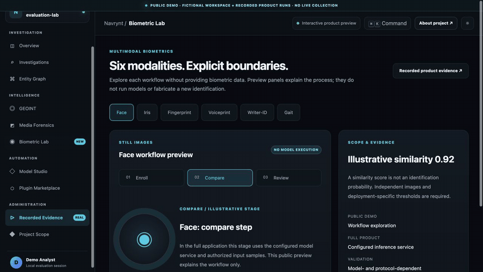

A fictional workspace you can explore.
Review a case, select graph nodes, move through generated tracks and compute a real local file hash. Biometric tabs and model plans are previews; no model or live provider query runs here.
Open the live demo ↗Bring research, relationships, maps and biometric workflows into one workspace. Run NAVRYNT on your infrastructure, with connected investigation workflows.
Research becomes useful when you can see where a result came from, how it connects and what to investigate next.
Explore public records, company relationships and confirmed on-chain activity.
↗02 / CONNECTPut relationships and geospatial observations in a shared investigation workspace.
↗03 / ANALYZEUse specialist biometric services and supported model workflows with explicit scope.
↗The public demo and the separate self-hosted application have different execution boundaries.
Review a case, select graph nodes, move through generated tracks and compute a real local file hash. Biometric tabs and model plans are previews; no model or live provider query runs here.
Open the live demo ↗Watch regional aircraft observations, earthquakes, company relationships and a research voice comparison in the configured full application. Recordings establish their specific runs, not every service or general identity accuracy.
Inspect full-product recordings →Original recordings from the full application. Select a workflow to see its actual interface and output.
Browse all 4 recordings ↗ADSB.lol · OpenStreetMap / 16 Oct 2026
A historical regional position snapshot. Coverage depends on the source; this is not continuous tracking.
Silent recordings made from successive real screen captures, typically 3–4 fps. Historical demonstrations, not live data or uninterrupted 30/60 fps recordings.
Face, iris, fingerprint, voice, writer identification and gait have dedicated service paths. Model Studio exposes supported preparation, evaluation and export tasks.
Review actual job outputs and research limits before choosing the workflows that fit your deployment.
Explore the six modalities ↗
Deploy the Python backend and React frontend on infrastructure you control. Extend through APIs and plugin interfaces, and configure the model services your workflow needs.
Explore the deployment model ↗Self-hosted core. External providers can receive queries when enabled.
A fictional case connects investigation, graph and map interactions. Local file hashing runs in your browser. Biometric views illustrate workflows; recorded clips show actual full-product runs. The demo does not run the product models.
Some public-source workflows work without accounts. Providers such as HIBP email breach search, live AIS and OpenSky need separate access or credentials. Availability and quotas depend on each provider.
No. The published examples use limited research data and some synthetic process tests. See the biometric page for the data and limits of each example. Broader deployment-specific accuracy and load testing remain necessary.
Explore the interactive demo, inspect the recordings and read the project architecture.